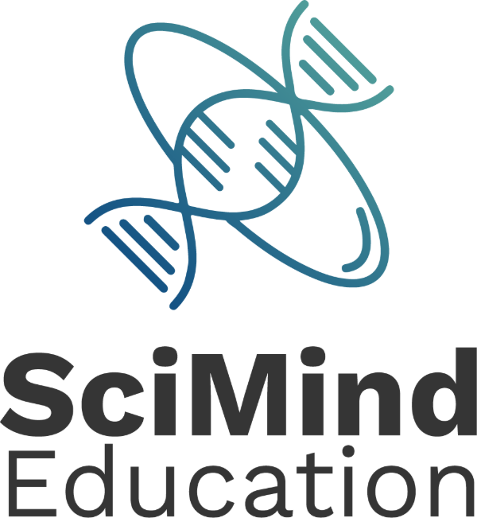
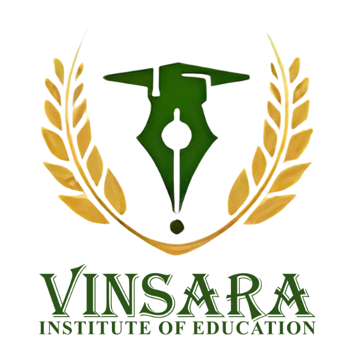

Make ideas clear.
Explain concepts in manageable steps and show how individual ideas connect to a bigger scientific picture.
Science education with structure, purpose and space for every question.
SciMind Education helps students develop scientific understanding, problem-solving skills, confidence and effective learning habits.
Online science education is available to students across Victoria and Australia, subject to programme availability and suitability. Face-to-face classes take place in Mulgrave, Victoria.
We believe that learning feels more achievable when ideas are clearly explained and students have the opportunity to practise, ask questions and reflect.
Explain concepts in manageable steps and show how individual ideas connect to a bigger scientific picture.
Use guided questions and problem-solving to strengthen the ability to apply knowledge.
Create a supportive environment where asking questions and revisiting difficult ideas are part of learning.

Nisa Bandarayapa · Science Educator · 10+ Years of School Teaching Experience
I believe every student can understand and enjoy science when concepts are taught with clarity, patience and purpose.
With over ten years of teaching experience, I am passionate about making Biology, Chemistry and Psychology easier to understand through clear explanations and engaging learning experiences.
My approach goes beyond memorising facts. I encourage students to ask questions, explore ideas, think critically and understand the why behind every concept. By building understanding step by step, I aim to help students approach challenging topics with greater confidence.
One of the most rewarding parts of teaching is witnessing that “Aha!” moment when a concept that once seemed difficult finally makes sense.
“Don't just memorise science. Make sense of it.”

SciMind EducationVertical logo to be supplied
Vinsara Institute of EducationVertical logo to be suppliedSciMind Education × Vinsara Institute of Education
Through our collaboration with Vinsara Institute of Education, we aim to provide students with a supportive learning environment and quality educational support. This collaboration brings together complementary educational expertise, with SciMind Education focusing on science education and helping students build understanding, confidence and strong academic foundations.
Vinsara Institute of Education offers Mathematics and Physics, with over 25 years of excellence in education. Together, our complementary subject expertise supports students in building strong foundations across science and mathematics.
Working together to support student success.
We’re planning a more organised digital experience for SciMind families. The following features are planned, not currently available.
Stay connected with your child's learning through a convenient central hub for parent information and updates.
Greater visibility into your child's learning journey.
A dedicated learning space to help students stay organised, access learning materials and keep track of their progress.
Supporting more organised and independent learning.
Tell us where your child is now, and what they’d like to achieve.